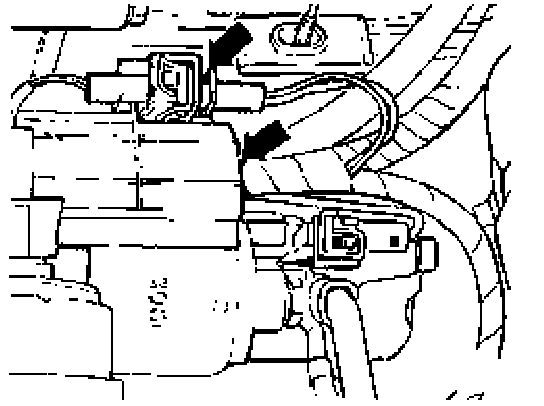

Starter Motor: Service and Repair
Starter motor, removing and installing
CAUTION! Before working on the electrical system:
- Obtain radio anti-theft code.
- Ignition OFF!
- Disconnect battery Ground (GND) strap.
Notes: After reconnecting battery:
- Activate vehicle vehicle equipment such as radio, clock and power windows.
- On vehicles equipped with OBD II, activate readiness code.
Removing

- Install engine support bridge assembly 1O-222A and 1O-222A/1.

- Remove black plastic cap and connector -arrows-from solenoid.

- Unlatch connector at solenoid terminal 50 -upper arrow- and disconnect.
- Remove nut securing wiring to solenoid terminal 30 (B+) -lower arrow-.
Tightening torque: 13 Nm (10 ft lb)
- Remove all brackets and fasteners that secure starter to transmission housing.
1.8 liter, 2.0 liter and 1.9 liter engines with manual transmission, starter fasteners

M8 nut -arrow- for bracket Tightening torque: 10 Nm (7 ft lb)

M10 x 60 bolt -arrowTightening torque: 45 Nm (33 ft lb)

M1O x 140 combination bolt-arrow- Tightening torque: 60 Nm (44 ft lb)

M1O x 140 upper bolt-arrow- Tightening torque: 60 Nm (44 ft lb)
2.8 liter engine with manual transmission, starter fasteners

M1O x 35 combination bolt -1- Tightening torque: 47 Nm (35 ft lb)
M1Ox 35 bolt -2- Tightening torque: 47 Nm (35 ft lb)
All engines with automatic transmission, starter fasteners

M1O x 35 combination bolt -arrow- Tightening torque: 60 Nm (44 ft lb)

M1O x 35 combination bolt -arrow- Tightening torque: 60 Nm (44 ft lb)

M8 nut -arrow- at combination bolt Tightening torque: 10 Nm (7 ft lb)